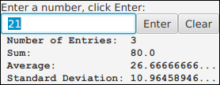
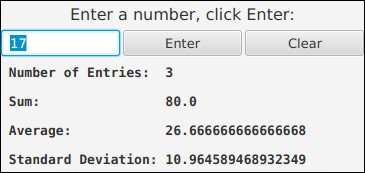

Solution for Programming Exercise 6.7
This page contains a sample solution to one of the exercises from Introduction to Programming Using Java.
Exercise 6.7:
Exercise 5.2 involved a class, StatCalc.java, that could compute some statistics of a set of numbers. Write a GUI program that uses the StatCalc class to compute and display statistics of numbers entered by the user. The program will have an instance variable of type StatCalc that does the computations. The program should include a TextField where the user enters a number. It should have four labels that display four statistics for the numbers that have been entered: the number of numbers, the sum, the mean, and the standard deviation. Every time the user enters a new number, the statistics displayed on the labels should change. The user enters a number by typing it into the TextField and then either clicking an "Enter" button or pressing the Return (or Enter) key. There should be a "Clear" button that clears out all the data. This means creating a new StatCalc object and changing the text that is displayed on the labels. (See the discussion of "default buttons" at the end of Subsection 6.4.2 for one way of implementing a response the Return key.) Here is a picture of my solution to this problem:

Getting the interface to look just like I wanted it was the hardest part. In the end, I used TilePanes (Subsection 6.5.4) for the layout.
In my solution, I used four labels to display results from the StatCalc, and another label at the top of the window to display a message to the user. Aside from these labels, one row in the layout holds the other three components: a TextField and two Buttons. I want to spend some time talking about how I designed the GUI for the program. My first idea for layout was to use an HBox to hold the text field and buttons, and a VBox to line up the HBox and the five labels vertically. As I often do, I first wrote the program without paying too much attention to appearance. The result was not very attractive:

Note in particular that there is not enough room in the bottom display labels to display the numbers. When this happens, a Label will automatically modify the displayed string to use an ellipsis (...) to indicate that not all of the text is shown. (Buttons will do the same thing.) When the labels were constructed, the text in the constructor did not include the numbers, so the preferred size of the labels was not large enough to allow enough space when the numbers were added later. This is often an issue when using labels and buttons whose text will change while the program is running.
I could have worked to improve the appearance, but I decided that it would be easier to do if I used TilePanes for layout. My final program uses a TilePane to hold the textfield and buttons; the preferred number of columns for that TilePane is set to 3. And the program uses a TilePane with one column for the overall layout.
Labels and buttons in a TilePane will not automatically expand to fill their tiles, because of their default maximum size. To allow them to expand, we have to increase their maximum sizes. This can be done by calling, for example, label.setMaxSize(1000,1000).
I also reduced the number of preferred columns in the TextField, since the default forced the preferred size of the scene to be larger than I liked. With all of these changes, the interface looked much nicer:

This would have been satisfactory, but I wanted something a little more dramatic. I decided to add lines between the labels. I could have done that by adding black borders to the labels, but I decided to use a different approach. I set the horizontal and vertical gaps on the TilePanes to be 3 pixels. The background will show through the gaps, so I got my black lines by setting the background color of the root TilePane to be black, instead of the usual light gray. Unfortunately, the default background for a label is transparent, which meant that all the labels were filled with the black background of the root TilePane, hiding the text, which was also black! To fix that, I set the text color for the top label to be white, and I set the background color for the other four labels to be white. This finally gave me the look that I wanted. I should emphasize that the approach that I used is not by any means the only one that would have worked.
Turning to the actual programming, consider the labels that display the results from the StatCalc. Since there are four labels to create, I wrote a method to create and configure them:
/**
* A utility routine for creating the labels that are used
* for display. This routine is used in the start() method.
*/
private Label makeLabel(String text) {
Label label = new Label(text);
label.setMaxSize(1000,1000);
label.setStyle("-fx-background-color:white; " +
"-fx-font-family: monospace; -fx-font-weight: bold");
return label;
}
Note that the maximum width and height of the label have been made quite large. CSS styling (Subsection 6.2.5) is used to set the background color to be white and to use a bold monospace font. (A monospace font is used since every character in a monospace font has the same width, making it easy to line up the numbers vertically in the labels. JavaFX 8 seems to have no way to ensure that a font will be monospace, except to use CSS.)
Then in the start() method, the labels can be created with four statements, instead of 12:
countLabel = makeLabel(" Number of Entries: 0");
sumLabel = makeLabel(" Sum: 0.0");
meanLabel = makeLabel(" Average: undefined");
standevLabel = makeLabel(" Standard Deviation: undefined");
Utility routines like makeLabel() are very commonly used when there are a lot of similar components to create. Note that when the labels are first created, the text on the labels is appropriate for a dataset that contains zero elements. In particular, if there is no data, the average and standard deviation are undefined.
An ActionEvent handler is installed on each button. The handler calls an appropriate method that is defined elsewhere in the class. The "Enter" button is made into the default button for the program by calling enterButton.setDefaultButton(true), as suggested in the instructions for the exercise. Note in the screenshot from the program that this also changes the appearance of the "Enter" button. Here is the code that creates and configures the buttons:
enterButton = new Button("Enter");
enterButton.setOnAction( e -> doEnter() );
enterButton.setMaxSize(1000,1000);
enterButton.setDefaultButton(true);
clearButton = new Button("Clear");
clearButton.setOnAction( e -> doClear() );
clearButton.setMaxSize(1000,1000);
In the doClear() method, the response to the "Clear" button is to create a new StatCalc object and to reset the display labels to reflect the fact that there is no data in the dataset. The labels are changed by another method, showData():
private void doClear() {
stats = new StatCalc();
numberInput.setText("");
showData();
}
Here, stats is a global variable of type StatCalc that is used to do the calculations in the program. It's important to understand the effect of the command "stats = new StatCalc();". The program will continue to use the same StatCalc variable, stats. However, now the variable refers to a new StatCalc object. The new object does not yet have any data in its dataset. When showData() is called, it is working with a StatCalc object to which no data has been added. The next time the user enters a number, the dataset will get its first value. Always keep in mind the difference between variables and objects. Also, keep in mind that you have to think in terms of changing the state of the program in response to events. I change the program's state by starting to use a new StatCalc object, and I call showData() to change the display labels to keep them consistent with the new state.
When the user clicks the "Enter" button or presses Return, another method, doEnter() is called. That method has to get the user's input, add it to the StatCalc object, and then call showData() to change the display labels to show the new values. The code for getting the user's number from the input box includes a check to make sure that the user's input is a legal number. If the input is not legal, then the method shows an error message in the Label at the top of the window, which is represented by a global variable named message:
private void doEnter() {
double num; // The user's number.
try {
num = Double.parseDouble(numberInput.getText());
}
catch (NumberFormatException e) {
// The user's entry is not a legal number.
// Put an error message in the message label
// and return without entering a number.
message.setText("\"" + numberInput.getText() + "\" is not a legal number.");
numberInput.selectAll();
numberInput.requestFocus();
return;
}
stats.enter(num);
showData();
}
When an error is detected, the method returns immediately, since there is no data to process. The commands "numberInput.selectAll();" and "numberInput.requestFocus();" are there as a convenience for the user. The first command selects all the text in the textfield. The second command gives the input focus to the textfield. That way, the user can just start typing the next number, without having to click on the input box or erase the content of the box. (Since the contents of the box are selected, they will disappear automatically when the user starts typing, to be replaced with the new input. A surprising number of people have never learned that text selections work this way.)
Once we have the user's number, the command "stats.enter(num);" adds the number num into the dataset. In the showData() method, the statistics about the data set can be obtained by calling the functions stats.getCount(), stats.getSum(), stats.getMean(), and stats.getStandardDeviation(). (This information can be found by reading the source code for the StatCalc class.) These values are used on the labels that display the statistics. For example,
countLabel.setText(" Number of Entries: " + stats.getCount());
Returning to the topic of variables versus objects, a common novice mistake would be to try to change the text that is displayed on the label by saying
countLabel = new Label(" Number of Entries: " + stats.getCount()); // WRONG
since that type of command is what was used to set the text in the first place. But this statement has no effect on what is displayed on the screen. The reason why this doesn't work is instructive: The assignment command creates a new Label and sets countLabel to refer to that new object. The new label does indeed have the desired text. But the new label has nothing to do with what's on the screen! The original label was created in the constructor and added to the root tilepane. It is the original label object that is in the scene graph, so the original label continues to appear on the screen even if the instance variable countLabel now refers to a different label object. The correct command, using countLabel.setText(), modifies the original label object, which is what is shown on the screen.
As a point of interest, I will mention another technique. You might want to limit the number of decimal places that are displayed in the statistics. You know how to do this in output to the command line, using System.out.printf, but we are not outputting the data here, just putting it into a String. The String class has a static method String.format() that solves this problem. String.format(fmtString,val,val,val,...) works similarly to System.out.printf(fmtString,val,val,val,...), but instead of producing output, String.format just creates a string and returns it. To set the text of the label that displays the average, for example, you Might say:
meanLabel.setText( String.format(" Average: %1.8g", stats.getMean()) );
I don't do this in my solution, but String.format() can be very useful
import javafx.application.Application;
import javafx.stage.Stage;
import javafx.scene.Scene;
import javafx.scene.layout.TilePane;
import javafx.scene.control.Button;
import javafx.scene.control.Label;
import javafx.scene.control.TextField;
import javafx.scene.paint.Color;
import javafx.scene.text.Font;
/**
* In this program, the user enters numbers in a text field box.
* After entering each number, the user presses return (or clicks
* on a button). Some statistics are displayed about all the
* numbers that the user has entered.
*/
public class StatCalcGUI extends Application {
public static void main(String[] args) {
launch(args);
}
//---------------------------------------------------------------------
private Label countLabel; // A label for displaying the number of numbers.
private Label sumLabel; // A label for displaying the sum of the numbers.
private Label meanLabel; // A label for displaying the average.
private Label standevLabel; // A label for displaying the standard deviation.
private Label message; // A message at the top of the program. It will
// show an error message if the user's input is
// not a legal number. Otherwise, it just tells
// the user to enter a number and press return.
private Button enterButton; // A button the user can press to enter a number.
// This is an alternative to pressing return.
private Button clearButton; // A button that clears all the data that the
// user has entered.
private TextField numberInput; // The input box where the user enters numbers.
private StatCalc stats; // An object that keeps track of the statistics
// for all the numbers that have been entered.
/**
* Set up the GUI and event handling.
*/
public void start(Stage stage) {
stats = new StatCalc();
numberInput = new TextField();
numberInput.setPrefColumnCount(8); // Makes the text box smaller than the default.
enterButton = new Button("Enter");
enterButton.setOnAction( e -> doEnter() );
enterButton.setMaxSize(1000,1000);
enterButton.setDefaultButton(true); // Pressing return will be equivalent to clicking this button.
clearButton = new Button("Clear");
clearButton.setOnAction( e -> doClear() );
clearButton.setMaxSize(1000,1000);
countLabel = makeLabel(" Number of Entries: 0");
sumLabel = makeLabel(" Sum: 0.0");
meanLabel = makeLabel(" Average: undefined");
standevLabel = makeLabel(" Standard Deviation: undefined");
message = new Label("Enter a number, press return:");
message.setFont(Font.font(16));
message.setTextFill(Color.WHITE);
TilePane inputPanel = new TilePane(3,3,numberInput,enterButton,clearButton);
inputPanel.setPrefColumns(3);
TilePane root = new TilePane(3, 3, message, inputPanel, countLabel,
sumLabel, meanLabel, standevLabel);
root.setPrefColumns(1);
root.setStyle("-fx-border-color:black; " +
"-fx-border-width:3; -fx-background-color:black");
Scene scene = new Scene(root);
stage.setScene(scene);
stage.setTitle("Simple Calc GUI");
stage.setResizable(false);
stage.show();
} // end start()
/**
* A utility routine for creating the labels that are used
* for display. This routine is used in the start() method.
* @param text The text to show on the label.
*/
private Label makeLabel(String text) {
Label label = new Label(text);
label.setMaxSize(1000,1000);
label.setStyle("-fx-background-color:white; " +
"-fx-font-family: monospace; -fx-font-weight: bold");
return label;
}
/**
* Clear all data, restoring the program to its original state.
* This method is called when the user clicks the Clear button.
*/
private void doClear() {
stats = new StatCalc();
numberInput.setText("");
showData();
}
/**
* Respond when the clicks the Enter button by getting a number from
* the text input box, adding it to the StatCalc and updating the
* four display labels. It is possible that an error will occur,
* in which case an error message is put into the label at the top
* of the window. (Because the Enter button has been set to be the
* default button for the program, this mehod is also invoked when
* the user presses return.)
*/
private void doEnter() {
double num; // The user's number.
try {
num = Double.parseDouble(numberInput.getText());
}
catch (NumberFormatException e) {
// The user's entry is not a legal number.
// Put an error message in the message label
// and return without entering a number.
message.setText("\"" + numberInput.getText() + "\" is not a legal number.");
numberInput.selectAll();
numberInput.requestFocus();
return;
}
stats.enter(num);
showData();
}
/**
* Show the data from the StatCalc in the four output labels.
*/
private void showData() {
countLabel.setText(" Number of Entries: " + stats.getCount());
sumLabel.setText(" Sum: " + stats.getSum());
if (stats.getCount() == 0) {
// Don't show any values for mean and standard deviation if
// no numbers have been added to the data.
meanLabel.setText(" Average: undefined");
standevLabel.setText(" Standard Deviation: undefined");
}
else {
meanLabel.setText(" Average: " + stats.getMean());
standevLabel.setText(" Standard Deviation: " + stats.getStandardDeviation());
}
/* Set the message label back to its normal text, in case it has
been showing an error message. For the user's convenience,
select the text in the TextField and give the input focus
to the text field. That way the user can just start typing
the next number. */
message.setText("Enter a number, click Enter:");
numberInput.selectAll();
numberInput.requestFocus();
}
} // end StatsCalcGUI